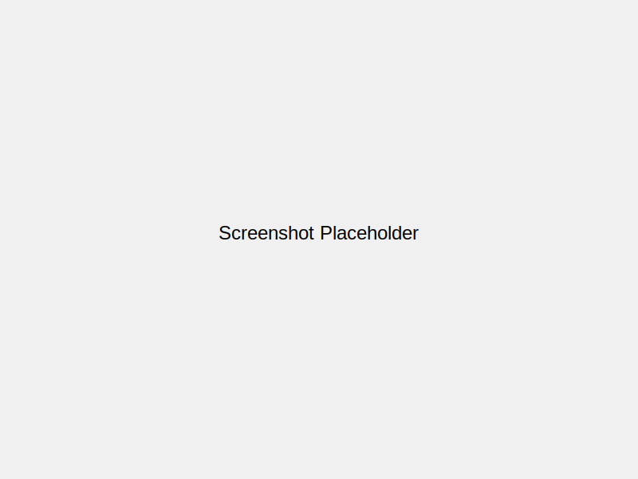

Features
Clipboard History
Keep track of everything you copy
Keyboard Shortcuts
Quick access with ⌘⇧V
Smart Search
Find any copied content instantly
Privacy Focused
Your data stays on your machine
Screenshots

Clipboard History View

Quick Search

Settings
Menu Bar Access
Download
System Requirements
- macOS 13.0 or later
- Apple Silicon or Intel Mac
Current Version: 1.0.0-beta